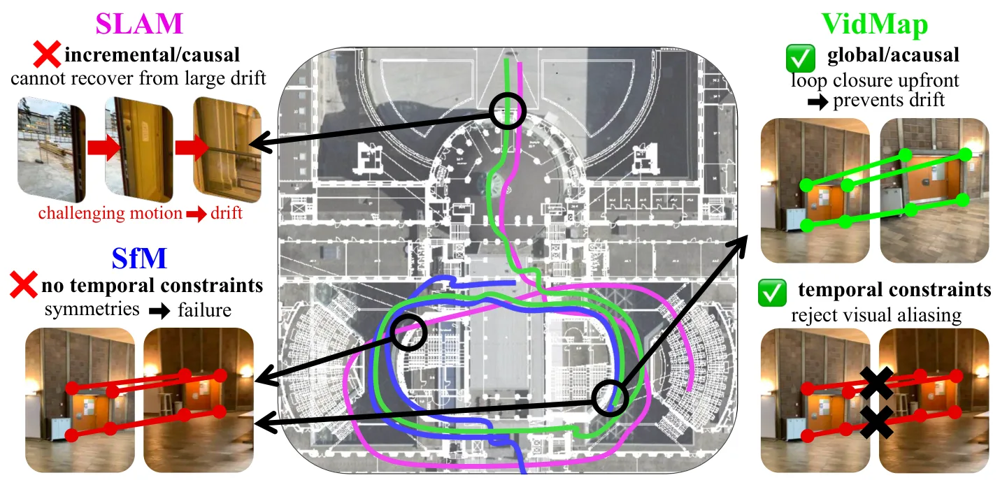
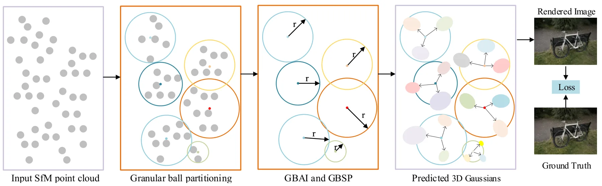

新论文 · 日期 2026-07-30 · score 14 · cs.CV, cs.RO
作者：Zador Pataki, Paul-Edouard Sarlin, Marc Pollefeys
评分 9.6/10
视频 SfMSLAM相机自标定回环检测度量重建
一句话工作总结：以时序约束、宽基线稠密匹配和 metric depth prior 连接 SLAM 与离线 SfM，重建任意长、未标定视频。
为了从任意未约束视频恢复相机标定和 metric poses，VidMap 将 SLAM 的强时序约束与离线 SfM 的灵活初始化和全局优化结合。系统使用宽基线 dense image matching，将时间顺序作为可靠 loop closure 的一等信息，并用 metric monocular depth priors 增强全局优化。作者在包含极端运动和视觉对称的多类困难数据上评估，摘要称其比经典或学习式、已…
Accurately recovering the camera's calibration and metric poses for any unconstrained video would unlock large-scale training data for navigation and scene understanding. The dominant approaches to this proble…

新论文 · 日期 2026-07-29 · score 13 · cs.GR, cs.CV, cs.RO
作者：Gahye Lee, Gyoonseo Kim, Wonjong Jang, Jooeun Son
评分 8.9/10
3DGS关节物体结构约束部件分解动态重建
一句话工作总结：借助部件 OBB 对空间连贯性和结构连接性施加显式损失，改善关节物体 3DGS 的分解边界与几何。
StructureGS 针对关节物体重建中 geometry、appearance 与 motion 参数相互纠缠的问题，将部件 oriented bounding boxes 作为结构指导注入 3D Gaussian Splatting。其 structure-aware losses 强制两项属性：spatial coherence 约束每个部件的几何在指定区域内保持紧凑连贯，structural connec…
Reconstructing articulated objects with multiple movable parts is essential for understanding object structure and enabling physical interaction. However, this reconstruction task poses significant challenges…

新论文 · 日期 2026-07-29 · score 12 · cs.GR
作者：ByungHyun Kim, Jinwoo Jeon, Woontack Woo
评分 8.7/10
3DGS 压缩对象资产免训练Atlas PackingXR
一句话工作总结：无需原图或再训练，联合局部竞争裁剪和确定性 atlas packing，将对象 3DGS 资产准备最多加速 25×。
AtlasLC 是 source-free、training-free 的对象中心 3DGS 压缩流水线，可直接处理已发布 Gaussian assets，不需原始图像、相机位姿或逐资产优化。方法组合 local-competition pruning 与 deterministic atlas packing，在保留对象前景支持的同时消除 mapping/remapping 瓶颈，并使用轻量单遍 sort-bas…
3D Gaussian Splatting (3DGS) enables photorealistic novel-view synthesis with real-time rendering, but deploying compressed object-centric 3DGS in XR requires more than image-space rate-distortion. In practica…

新论文 · 日期 2026-07-30 · score 11 · cs.RO, eess.SY
作者：Abhinav Sharma, Md Abdullah Al Hasan, Danjue Chen, George F. List
评分 7.2/10
RTK-GNSS/INS自动驾驶轨迹数据集换道行为安全评估
一句话工作总结：以 78 次公共道路试验和高分辨率 RTK-GNSS/INS 轨迹刻画自动换道间隙与风险演化。
该工作发布 NC-tALC 数据集并研究过渡型自动驾驶车辆的强制换道行为。研究在北卡罗来纳州公共道路上完成 78 次可控试验，四辆 instrumented vehicles 构造可重复交通条件；高分辨率 RTK-GNSS/INS trajectories 用于识别关键时刻、计算 lead/lag/lane-change gaps，并以时间间隔和速度 surrogate safety measures 分析交互。结…
This paper presents the North Carolina Transitional Autonomous Vehicle Lane-Changing (NC-tALC) dataset and uses it to characterize mandatory lane-changing behavior of transitional automated vehicles (tAVs). It…
新论文 · 日期 2026-07-29 · score 11 · cs.CV
作者：Jingxuan Su, Shenglin Wang, Tiesong Zhao, Ge Li
评分 8.2/10
3DGS质量评估跨视图一致性多模态大模型空间结构
一句话工作总结：联合多视图图像、深度、点云渲染和相机参数，学习结构感知的 3DGS 场景质量表示与多模态推理。
SpatialQ 面向 3DGS 场景质量不仅取决于单视图感知质量，还取决于 spatial structure 与 cross-view consistency 的问题。框架在 VGGT-based encoder 上增加 quality head，对多视图 view-specific features 聚合，并联合 depth 与 point-cloud-related structural cues 学习 3…
3D Gaussian Splatting (3DGS) has emerged as an effective representation for novel view synthesis and 3D scene reconstruction, creating an increasing demand for reliable quality assessment. Unlike conventional…

新论文 · 日期 2026-07-29 · score 11 · cs.CV
作者：Meng Yang, Shuyin Xia, Dawei Dai, YiWang
评分 8.3/10
3DGSSfM 点云Anchor模型压缩新视角合成
一句话工作总结：用自适应粒球组织非均匀 SfM 点云，并以球心和半径初始化 anchor 及尺度先验，减少 3DGS 存储。
3DGBGS 针对 anchor-based 3DGS 以固定 voxelization 处理非均匀 sparse SfM point clouds 时的紧凑性与质量冲突，引入 adaptive granular ball organization。较大的 balls 表示平滑冗余区域，较小 balls 保留复杂几何和局部细节；Granular Ball Anchor Initialization 以球心初始化紧凑…
Three-dimensional Gaussian Splatting (3DGS) enables high-quality real-time novel-view synthesis through explicit Gaussian primitives and differentiable rasterization. 3DGS and Granular Ball Computing (GBC), pr…

新论文 · 日期 2026-07-30 · score 3 · cs.CV
作者：Álvaro Díaz-Laureano, Roger Marí, Elías Masquil, Pablo Arias
评分 8.5/10
稠密立体匹配卫星影像跨季节三维重建生成式 AI
一句话工作总结：以可控季节变化合成训练对和 foundation geometry priors，实现无需 LiDAR 标签的跨日期卫星稠密立体重建。
SeasonStereo 解决不同日期卫星图像因季节和光照变化导致的 dense stereo matching 困难。方法利用可控季节外观变化的 synthetic image pairs 训练 disparity estimation，并结合 foundation models 的 zero-shot geometric priors，避免依赖大规模对齐的真实跨日期影像和 LiDAR geometry labe…
Accurate 3D reconstruction from satellite imagery typically relies on near-simultaneous stereo pairs, limiting its applicability to diachronic settings where multi-date images exhibit varying seasonal and illu…

新论文 · 日期 2026-07-29 · score 3 · cs.CV
作者：Yongxin Su, Linjie Hou, Feng Wang, Jialin Tang
评分 7.9/10
全景重建3DGS视频扩散轨迹控制具身仿真
一句话工作总结：从单张全景按可控 SE(3) 轨迹生成视频，再前馈重建可实时漫游的 3D Gaussian 仿真场景。
Genie Sim PanoWorld 从单张 360° panorama 生成高保真、可自由导航的室内三维场景，无需逐场景优化或多视图采集。第一阶段把 NavMesh-planned SE(3) trajectory 通过 dense geometry-warped conditioning 注入 latent video diffusion model，并以 long-short mixed training…
We address the problem of reconstructing a high-fidelity, freely navigable 3D scene from a single $360^\circ$ panorama, without per-scene optimization or multi-view capture. Existing methods either lack metric…